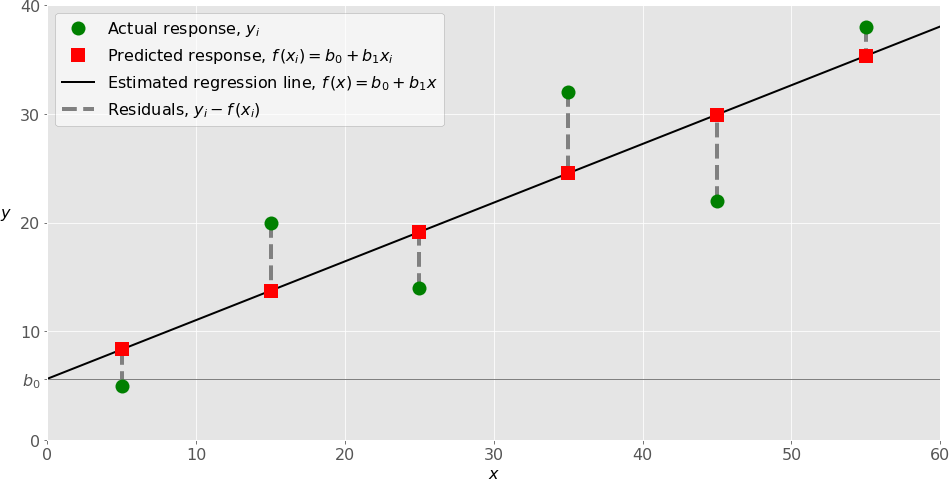

Vivimos en la era de grandes cantidades de datos, computadoras potentes e inteligencia artificial. Este es solo el comienzo. La ciencia de datos y el aprendizaje automático están impulsando el reconocimiento de imágenes, el desarrollo de vehículos autónomos, las decisiones en los sectores financiero y energético, los avances en medicina, el auge de las redes sociales y más. La regresión lineal es una parte importante de esto.
La regresión lineal es una de las técnicas estadísticas y de aprendizaje automático fundamentales. Ya sea que desee hacer estadísticas, aprendizaje automático o computación científica, hay buenas posibilidades de que lo necesite. Es recomendable aprenderlo primero y luego proceder hacia métodos más complejos.
Al final de este artículo, habrás aprendido:
¿Qué es la regresión lineal? Para qué regresión lineal se utiliza Cómo funciona la regresión lineal Cómo implementar la regresión lineal en Python, paso a paso
Regresión
El análisis de regresión es uno de los campos más importantes en estadística y aprendizaje automático. Hay muchos métodos de regresión disponibles. La regresión lineal es una de ellas.
¿Qué es la regresión? La regresión busca relaciones entre variables.
Por ejemplo, puede observar a varios empleados de alguna compañía e intentar comprender cómo sus salarios dependen de las características, como la experiencia, el nivel de educación, el rol, la ciudad en la que trabajan, etc.
Este es un problema de regresión en el que los datos relacionados con cada empleado representan una observación. La presunción es que la experiencia, la educación, el rol y la ciudad son las características independientes, mientras que el salario depende de ellas.
Del mismo modo, puede intentar establecer una dependencia matemática de los precios de las casas en sus áreas, número de dormitorios, distancias al centro de la ciudad, etc.
En general, en el análisis de regresión, generalmente considera algún fenómeno de interés y tiene una serie de observaciones. Cada observación tiene dos o más características. Siguiendo el supuesto de que (al menos) una de las características depende de las otras, intenta establecer una relación entre ellas.
En otras palabras, debe encontrar una función que asigne algunas características o variables a otras lo suficientemente bien.
Las características dependientes se denominan variables dependientes, salidas o respuestas.
Las características independientes se denominan variables independientes, entradas o predictores.
Los problemas de regresión generalmente tienen una variable dependiente continua y sin límites. Sin embargo, las entradas pueden ser datos continuos, discretos o incluso categóricos, como género, nacionalidad, marca, etc.
Es una práctica común denotar las salidas con 𝑦 y las entradas con 𝑥. Si hay dos o más variables independientes, se pueden representar como el vector 𝐱 = (𝑥₁, …, 𝑥ᵣ), donde 𝑟 es el número de entradas.
¿Cuándo necesitas regresión?
Por lo general, se necesita una regresión para responder si un fenómeno influye en el otro y cómo se relacionan varias variables. Por ejemplo, puede usarlo para determinar si y en qué medida la experiencia o el género afectan los salarios.
La regresión también es útil cuando desea pronosticar una respuesta utilizando un nuevo conjunto de predictores. Por ejemplo, podría intentar predecir el consumo de electricidad de un hogar para la próxima hora dada la temperatura exterior, la hora del día y el número de residentes en ese hogar.
La regresión se usa en muchos campos diferentes: economía, ciencias de la computación, ciencias sociales, etc. Su importancia aumenta cada día con la disponibilidad de grandes cantidades de datos y una mayor conciencia del valor práctico de los datos.
Regresión lineal La regresión lineal es probablemente una de las técnicas de regresión más importantes y ampliamente utilizadas. Es uno de los métodos de regresión más simples. Una de sus principales ventajas es la facilidad de interpretación de los resultados.
Formulación del problema Al implementar la regresión lineal de alguna variable dependiente 𝑦 en el conjunto de variables independientes 𝐱 = (𝑥₁, …, 𝑥ᵣ), donde 𝑟 es el número de predictores, se supone una relación lineal entre 𝑦 y 𝐱: 𝑦 = 𝛽₀ + 𝛽₁𝑥₁ + ⋯ + 𝛽ᵣ𝑥ᵣ + 𝜀. Esta ecuación es la ecuación de regresión. 𝛽₀, 𝛽₁, …, 𝛽ᵣ son los coeficientes de regresión, y 𝜀 es el error aleatorio.
La regresión lineal calcula los estimadores de los coeficientes de regresión o simplemente los pesos predichos, denotados con 𝑏₀, 𝑏₁, …, 𝑏ᵣ. Definen la función de regresión estimada 𝑓 (𝐱) = 𝑏₀ + 𝑏₁𝑥₁ + ⋯ + 𝑏ᵣ𝑥ᵣ. Esta función debe capturar las dependencias entre las entradas y salidas lo suficientemente bien.
La respuesta estimada o pronosticada, 𝑓 (𝐱ᵢ), para cada observación 𝑖 = 1, …, 𝑛, debe estar lo más cerca posible de la respuesta real correspondiente 𝑦ᵢ. Las diferencias 𝑦ᵢ - 𝑓 (𝐱ᵢ) para todas las observaciones 𝑖 = 1, …, 𝑛, se denominan residuales. La regresión se trata de determinar los mejores pesos pronosticados, es decir, los pesos correspondientes a los residuos más pequeños.
Para obtener los mejores pesos, generalmente minimiza la suma de los residuos cuadrados (SSR) para todas las observaciones 𝑖 = 1, …, 𝑛: SSR = Σᵢ (𝑦ᵢ - 𝑓 (𝐱ᵢ)) ². Este enfoque se llama el método de mínimos cuadrados ordinarios.
Rendimiento de regresión
La variación de las respuestas reales 𝑦ᵢ, 𝑖 = 1, …, 𝑛, se debe en parte a la dependencia de los predictores 𝐱ᵢ. Sin embargo, también hay una variación inherente adicional de la salida.
El coeficiente de determinación, denotado como 𝑅², le indica qué cantidad de variación en 𝑦 puede explicarse por la dependencia de 𝐱 utilizando el modelo de regresión particular. Mayor 𝑅² indica un mejor ajuste y significa que el modelo puede explicar mejor la variación de la salida con diferentes entradas.
El valor 𝑅² = 1 corresponde a SSR = 0, es decir, al ajuste perfecto ya que los valores de las respuestas pronosticadas y reales se ajustan completamente entre sí.
Regresión lineal simple La regresión lineal simple o de una sola variable es el caso más simple de regresión lineal con una sola variable independiente, 𝐱 = 𝑥.
La siguiente figura ilustra la regresión lineal simple:
